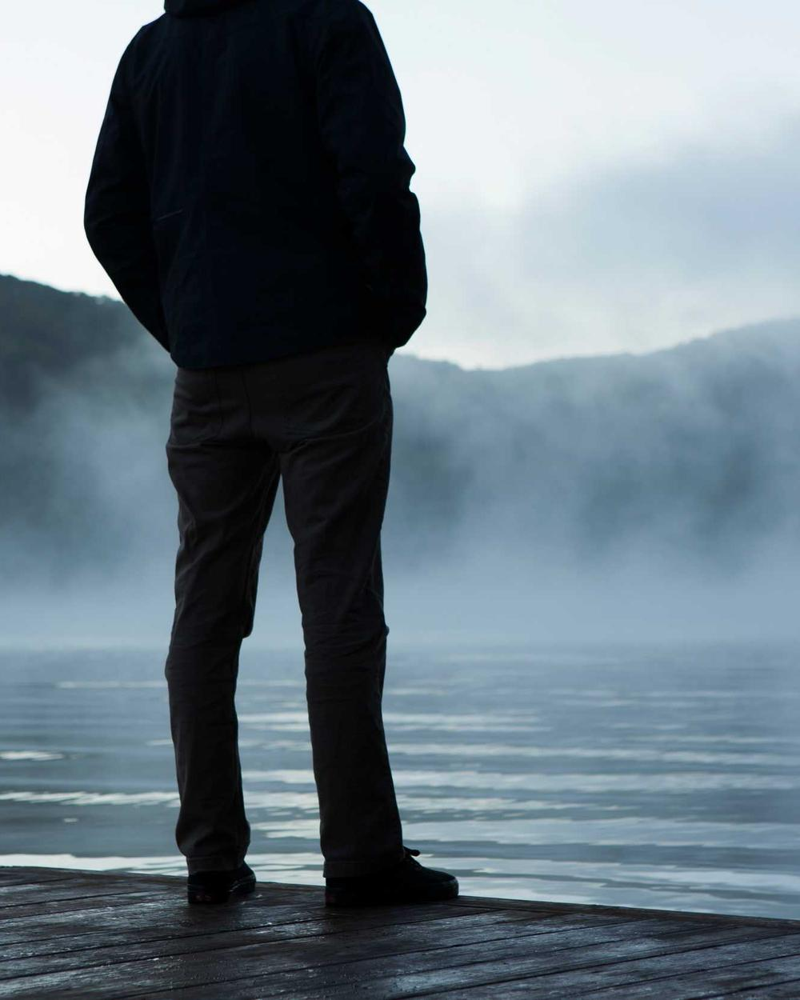
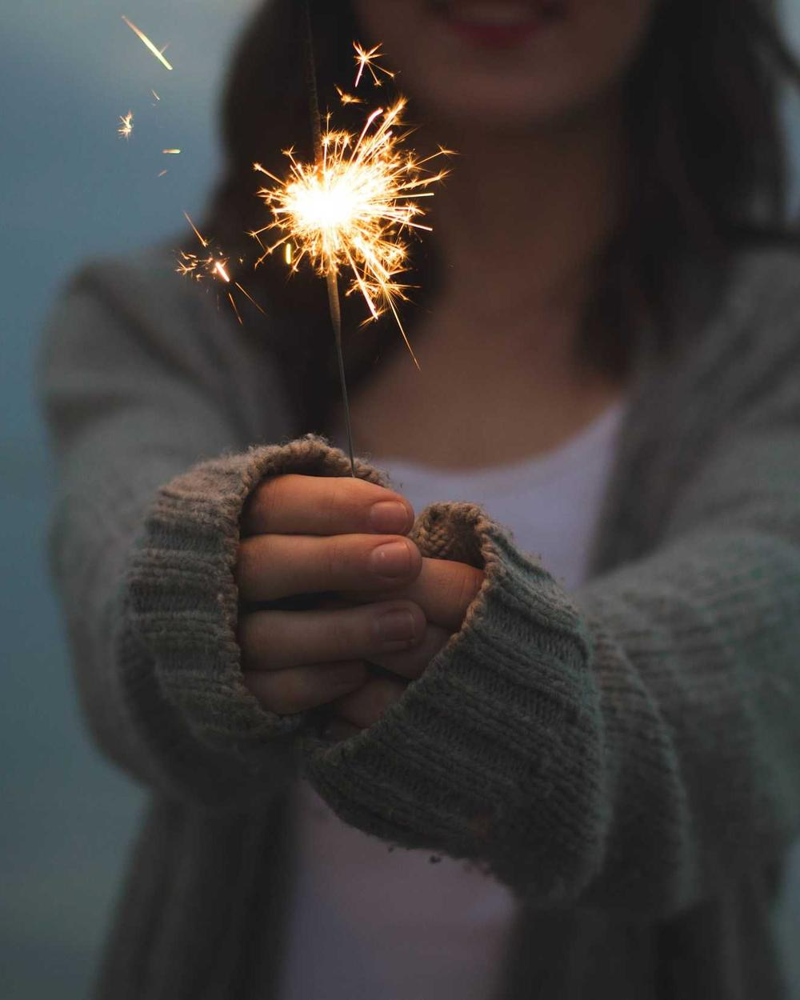
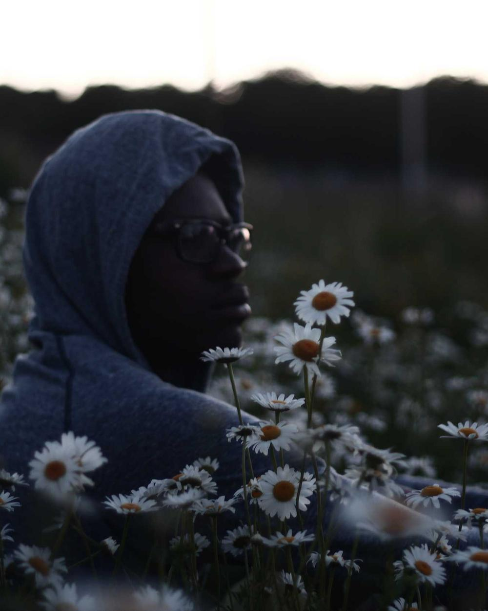

The lamps came on early
drifting · drizzle, 9°“Blue, like someone had stirred ink into water.”Radiohead, How to Disappear Completely



4me is a diary I keep after dark. One entry a night, with the mood, the weather and the song in my ears.
Move the light over the pictures
Some nights nothing is wrong. You just can't find where you are, so you walk until you can.





A wall of weather I keep for the nights I can't go out. Tap the frame for the next one, or pick a sky.
Aurora pillar over Brastad · Sweden
Read the bus 18 one on a night shift. Felt like someone was sitting with me.
grey_cloud_92 · last night, 23:04First hit counter I've seen since 2007. Visitor four thousand something, reporting.
hanh. · 17 Oct, 01:12Your playlist is exactly my mp3 player from ninth grade.
a passerby · 15 Oct, 19:30It did snow on the hill. I went up to check. Your footprints were gone.
wren · 13 Oct, 22:41Leaving the light on for whoever reads this at 3 am.
m. · 9 Oct, 02:58Write if a page found you on the right night.